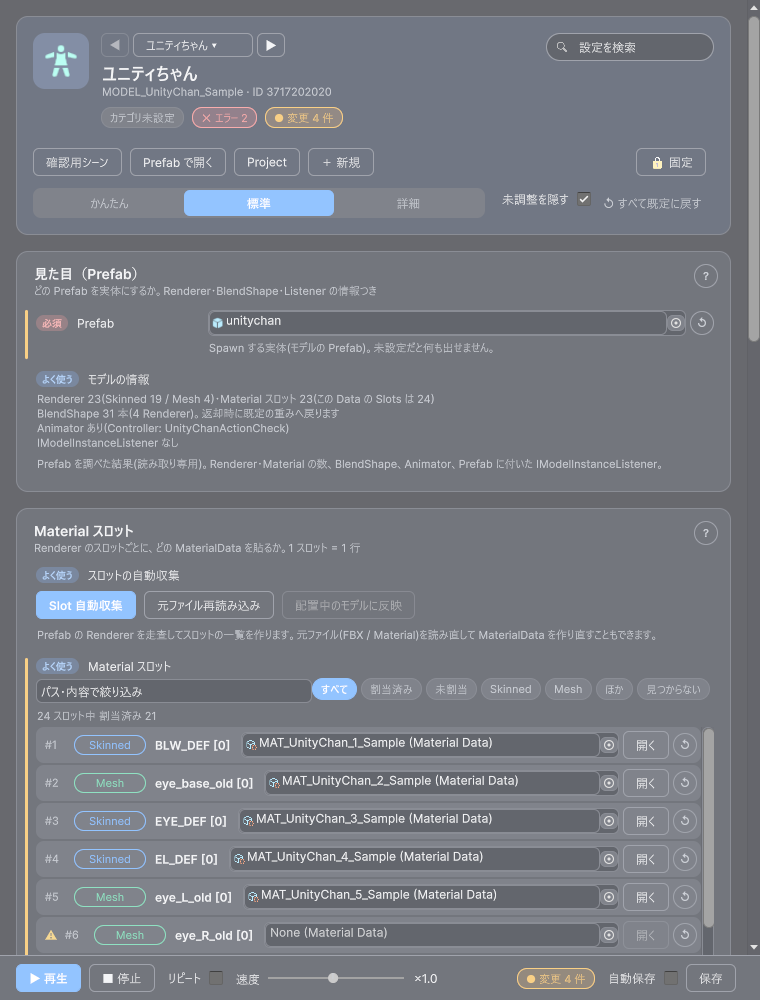
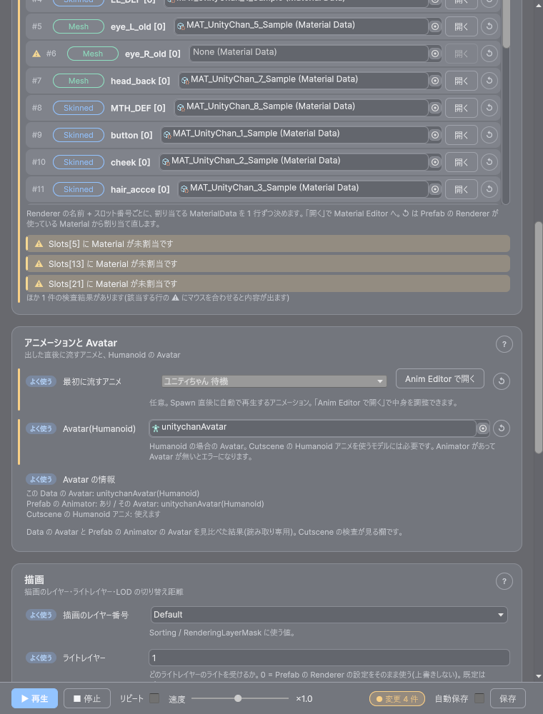
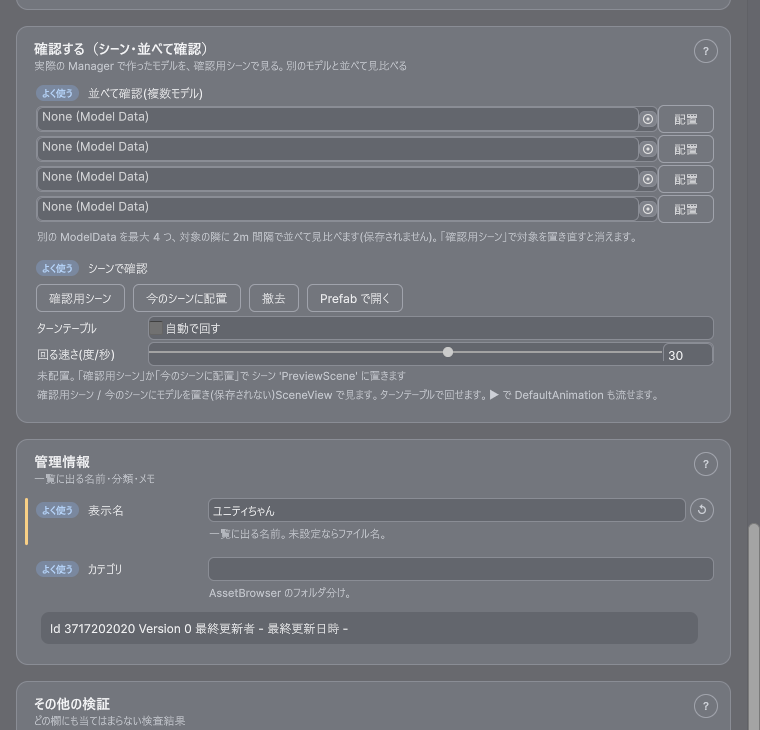

最終更新日: 2026-10-13
モデルデータ（ModelData）は「このキャラクター / 物体の Prefab を、どのマテリアル・どのアニメーションで出すか」をまとめたものです。プログラマーは Models.Spawn(MODELID.Player, 位置, 向き) と書くだけで、Prefab の差し替え・マテリアルの入れ替え・最初に再生するアニメーションはデータ側で決められます。
対象のデータを選んでいない（空の）ときは、ウィンドウの「サンプルを作る」ボタンでサンプルのデータを作って試せます（Assets/GameData/<種別>/Sample/ にカテゴリ Sample で作られます。同じものが既にあれば、作らずそれを選びます）。
Tools > D-Drive > Editors > Model
×1.0 に吸着）/ 変更の件数 / 自動保存 / 保存（Ctrl+S でも保存できます）。▶ は「モデルを置いて Default Animation を流す」です| 項目 | 説明 |
|---|---|
| Prefab | 出す Prefab。未設定は Error。設定すると Prefab の見た目からアイコンが自動で作られます（Inspector の「自動生成」で作り直せます） |
| モデルの情報 | Prefab を調べた結果です（読み取り専用）。Renderer の数（Skinned / Mesh）・Material スロットの数・BlendShape（表情）の数・Animator の有無・Prefab に付いた IModelInstanceListener（出現・返却の節目で通知を受ける部品） |

Renderer ごとに「どのマテリアルを貼るか」を決めます。スロットが多いモデルでも見通せるよう、1 スロット = 1 行で並びます。ゲーム実行時（Spawn）には、ここで選んだマテリアルに差し替わります。
| 操作 | 説明 |
|---|---|
| Slot 自動収集 | Prefab の Renderer を走査して一覧を作り、Renderer が使っている Material から作られた MaterialData を割り当てます。すでに割り当て済みのスロットは変更しません |
| 元ファイル再読み込み | Prefab の元になった FBX や Material からマテリアルデータを作り直してから、スロットに結び付けます（FBX を差し替えたあとに使います。マテリアルデータの固有の調整は保たれます） |
| 配置中のモデルに反映 | シーンに置いたモデルに、スロットのマテリアルをゲームと同じ経路で適用して、見た目を確かめます（モデルを置いていないときは押せません） |
| マテリアルの選び箱 | 行の MaterialData 欄に、別のマテリアルデータをドラッグするか、右の ◎ で選びます。空にすると未割り当てに戻ります |
| 開く | その行のマテリアルを Material Editor で開きます（色・つや・固有の調整） |
| ↺ | Prefab の Renderer が使っている Material から、対応するマテリアルデータを割り当て直します（対応するものが無いときは何も変えません） |
| 絞り込み | 一覧の上の検索（Renderer 名・Material 名）と、すべて / 割当済み / 未割当 / Skinned / Mesh / ほか / 見つからないのボタン。件数（「24 スロット中 割当済み 21」）が出ます。20 行を超えると一覧の中でスクロールします |
行のチップが見つからないのときは、その Renderer が Prefab から無くなっています（階層の名前を変えた・消した）。「Slot 自動収集」をやり直してください。
元の Material のシェーダーが D-Drive の標準シェーダー（DDrive/Lit・Unlit）に対応づけられないもの（独自のトゥーンシェーダーなど）のとき、確認のダイアログが1 回だけ出ます（Material ごとには出ません。見つかったシェーダー名と件数が表示されます）。
| 選択肢 | 結果 |
|---|---|
| 元のシェーダーのまま保つ | そのシェーダーでマテリアルデータを作ります（同じ名前のプロパティの値は固有欄に引き継がれます）。すでにシェーダーが入っているマテリアルデータのシェーダーは変えません |
| DDrive/Lit に変換 | DDrive/Lit のマテリアルデータにします |
| キャンセル（何もしない） | マテリアルデータもスロットも何も変更せず中断します |
毎回聞かれたくないときは、Create > D-Drive > Material > Maya Import Profile で作った Profile の「Unknown Shader Policy」を変えます。KeepSource は確認なしで元のシェーダーを保ち、ConvertToLit は確認なしで DDrive/Lit に変換します（既定の Ask は上の確認を出します）。モデルを取り込んだときの自動生成のように確認を出せない場面では、Ask のときは DDrive/Lit に変換します。
| 項目 | 説明 |
|---|---|
| 最初に流すアニメ（Default Animation） | 任意。出した瞬間に再生するアニメーションデータ。右の「Anim Editor で開く」で、そのアニメの中身（クリップ・ステート・イベント）を Anim Editor で調整できます |
| Avatar（Humanoid） | Humanoid のときの Avatar。Animator があるのに Avatar が無いと Error です。Cutscene で Humanoid のアニメを使うモデルには、この欄に Humanoid の Avatar が必要です |
| Avatar の情報 | このデータの Avatar と、Prefab の Animator が持つ Avatar を見比べた結果です（読み取り専用）。「Cutscene の Humanoid アニメ: 使えます / 使えません」も出ます。Animator 側に Humanoid の Avatar があるのにこの欄が空のときは、「Animator の Avatar を入れる」ボタンが出ます |
| 項目 | 説明 |
|---|---|
| 描画のレイヤー番号（Render Layer） | 出したときの描画のレイヤー |
| ライトレイヤー（Light Layer Mask） | どのライトの影響を受けるか（用語集）。0 は「Prefab の Renderer の設定をそのまま使う」で、上書きしません。既定は 1（Default） |
| LOD の閾値の上書き（Lod） | LOD の切替距離。Prefab に LODGroup があるときだけ効きます（詳細モード） |

| 要素 | 説明 |
|---|---|
| 確認用シーン | 確認用シーン（VFX / Anim と共通）を開いて、対象を原点に配置します。無ければ自動で作られます（Hierarchy に [D-Drive] Anim Preview が出ますが、シーンには保存されません）。右クリックで、いま開いているシーンへの配置・本配置を選べます |
| 今のシーンに配置 / 撤去 | 開いているシーン（またはプレハブモード）の原点に対象を置く / 消す。撤去は並べて確認の分も消します。置いたモデルは Hierarchy で選択された状態になります |
| Prefab で開く | モデルの Prefab をプレハブモードで開きます。Renderer やマテリアルをその場で編集して Ctrl+S |
| ターンテーブル | 「自動で回す」を ON にすると、置いたモデルを Y 軸で回します（速さは度/秒、マイナスで逆回転）。プレハブモードの実体は回しません |
| 並べて確認 | 別のモデルデータを最大 4 つ選び、「配置」で対象の隣に 2m 間隔で並べます（サイズ感や色味の比較に）。「撤去」で個別に消せます |
| 固定バーの ▶ | モデルを置いて Default Animation を流します（置いてあれば最初から流し直し）。Default Animation が未設定のときは、その旨が出ます |
| 項目 | 説明 |
|---|---|
| 表示名 / カテゴリ / 説明 / タグ / アイコン / 担当者 / 仕様書 URL / 変更メモ | Asset Browser での表示名・フォルダ分け・検索用のメモなど。Id / Version / 最終更新者 / 最終更新日時はツールが自動で付けます（手で編集しないでください） |
| 動作の取り決め / イベント | Pool・ポーズ・ネット配送などの共通設定と、出現・終了の節目で鳴らすもの（詳細モード） |
| 表示 | 対処 |
|---|---|
| Prefab が未設定(または Missing)です | Prefab を設定する |
| Animator がありますが Avatar が未設定です | Avatar の欄に Avatar を入れる（「Animator の Avatar を入れる」が出ていれば 1 回で入ります。静的なモデルなら Animator を外す） |
| Slots[0] の RendererPath '…' が Prefab 内で見つかりません | Prefab の階層が変わっています。「Slot 自動収集」をやり直す |
| Slots[0] に Material が未割当です | そのスロットにマテリアルを入れる（Prefab のマテリアルのままで良ければそのままでも動きます） |
| マテリアル '…' のシェーダーは Built-in 用です | URP 用のシェーダーに差し替える（Scene / Game でピンクや透明になります） |
これらは該当する欄の下に出るほか、Tools > D-Drive > Validation > Run All でも一覧に出ます（Validation の使い方）。